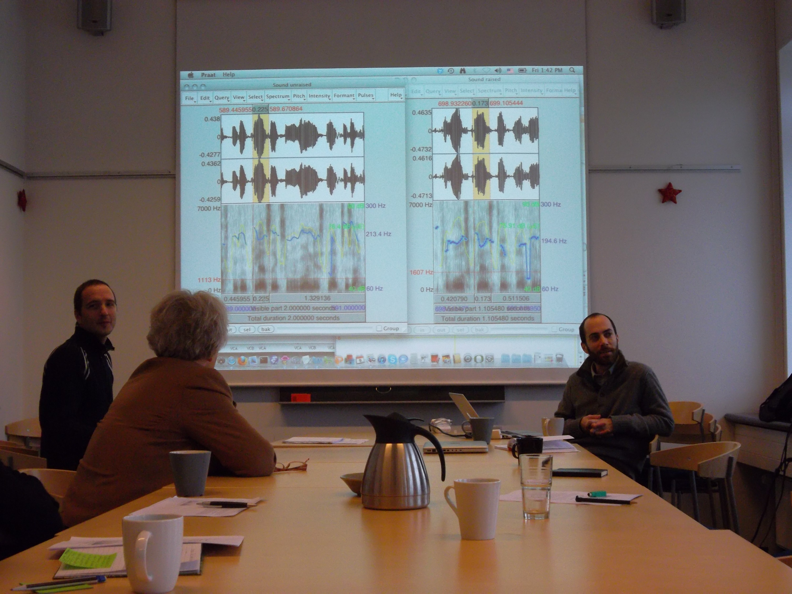

Links//
|
current & recent affiliations & collaborators
In addition to the Department of Linguistics and other affilations at the University of Oregon and the Linguistics Program and the Office of Research & Innovation at Duke University, I regularly consult or collaborate on research, teaching, and outreach endeavors with scholars around the world. Some of my ongoing and recent affiliations are listed here.
- SPADE: SPeech Across Dialects of English - Co-PI on the US Team
- Frontiers in Artificial Intelligence, Computational Sociolinguistics - Member of the Topic Editors
- National Science Foundation's Division of Behavioral and Cognitive Sciences (BCS) - Between 2019 - 2022 I served as a Program Director for the Linguistics, DLI-DEL, and Human Networks and Data Sciences (HNDS) Programs
- Oregon Networked Society Initiative - Reza Rejaie, Sanjay Srivistava, Lynn Kahle, Ryan Light, and others; University of Oregon
- Audio-Aligned and Parsed Corpus of Appalachian English - Christina Tortora; CUNY
- LANCHART Centre - University of Copenhagen, Denmark
- Memorial University Sociolinguistics Laboratory (MUSL) - Gerard Van Herk; Memorial University of Newfoundland, Newfoundland and Labrador, Canada
- Language and Life Project at North Carolina State University - Walt Wolfram, Erik Thomas, and colleagues
- University of York, Department of Language and Linguistic Science - In particular, the language variation and change and forensic speech science groups; York, UK
- The Vowels in America Project with Valerie Fridland English Dept., University of Nevada, Reno
|